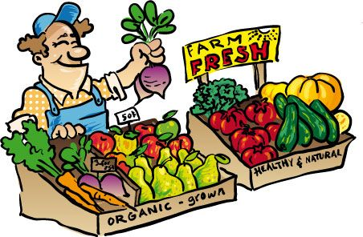

Ruby
At Ada Academy, the first language we start learning is Ruby. The first six weeks is pretty intense "get up to speed" with fundamentals of computer science (how to think like a dev) and language specifics.
Ruby projects I've done include:
Solar System
a Ruby project to learn how classes work. I named each of the planets in my test program after a famous planet in science fiction. See if you know them all?
Word Guess
a project I completed with Ania G. to make a Hangman style word guess game. Our theme was Pac-man. This was the first time I used a gem not in the standard libary, and I really liked how simple it was to pick up. This project gave me a real appreciation for how "human-friendly" Ruby is.Bank Accounts
a project handling input from CSVs and learning about objects. I originally struggled with this project because I made assumptions about how the data should be handled that were incorrect. This project was a good lesson in asking questions and writing to spec.
Scrabble
a project I did with Anna to create a Scrabble Letter Tile Bag and Player class. The fundamentals of a scrabble game. I never really thought about how many "moving pieces" there are in a game of Scrabble until I had to break it down into classes and methods.- 
FarMar
a project about writing good tests, using Enumerable, and working with a bigger amount of data. As difficult as I found pieces of this project, I really enjoyed it, and look forward to working with large amounts of data in the future. The complexity of the task made building the mental model of the problem fun.
HTML/CSS
This web page that you're currently looking at is a class project in learning to write and style webpages by hand. It was entirely coded in Sublime Text 3, and handstyled using only CSS. One of the most interesting challenges of this project was learning how to conceive of and structure the various containers on the page using only HTML for structure and doing all styles through CSS.
Talks and Presentations
Lightning Talk - Purim:
One of the things we've worked on at Ada is our ability to give talks. To practice, our class did lightning talks, and I spoke about Purim (a Jewish holiday). You can check out my slides if you like.